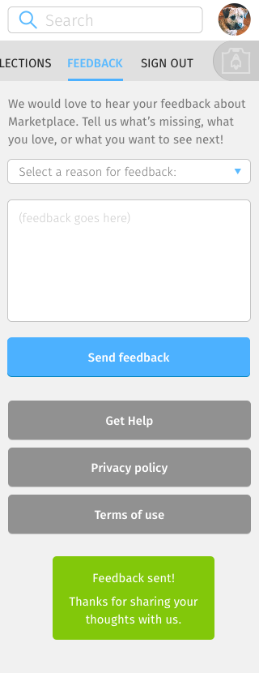
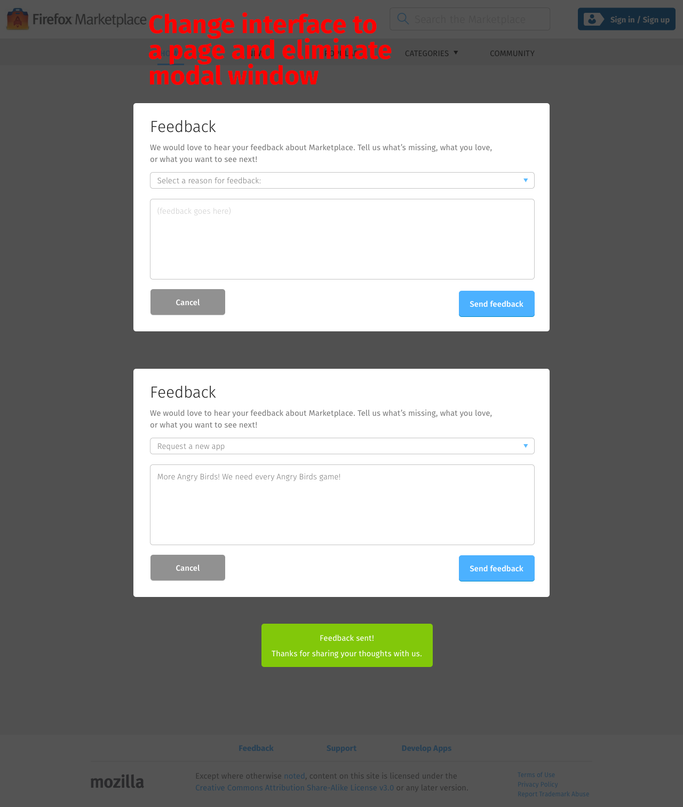

<div class="container">
	<div class="row">
		<div class="col-sm-12 col-md-12 col-lg-12">
			<h1>My Account &rarr; Feedback</h1>
			
			<p class="longText">Provides a way to report problems with Marketplace and submit suggestions to the Marketplace team. This interface contains:</p>
			
			<ol class="longText">
  			<li><strong>Reason for feedback dropdown menu</strong>:
    			<ul>
    			  <li>Inappropriate content</li>
    			  <li>Problem with the website</li>
    			  <li>Other problems</li>
    			</ul>
  			</li>
  			<li><strong>Feedback textbox</strong></li>
  			<li><strong>Send Feedback button</strong>: commit feedback using the values inputted on dropdown menu and textbox, then fades out the dropdown menu, textbox and button. This button only appears after a reason has been selected and the feedback textbox contained a value.</li>
  			<li><strong>Feedback sent message</strong>: fades in on the middle of the screen after feedback has been committed and the dropdown menu, textbox and button has faded out.</li>
			</ol>
			
		  <h3 class="specItem">Mobile</h3>
			
			
			
      <p class="longText">To access the feedback page, select the Settings icon on the navigation bar. Feedback is the third menu item on the list.</p>
			
      <h3 class="specItem">Tablet and Desktop</h3>
      
      
       
      
      
      <p class="longText">To access the feedback interface, expand the My Accounts navigation menu item, then select Feedback.</p>

		</div>
	</div>
	<!-- Pagination. If you have more than one page, set the multipage variable in the Frontmatter to true. Editing the pagination code happens in /_includes/homePagination.html.
		NOTE: This is currently broken in the Jekyll ver of this template.
		-->
		{% if page.multipage %}
			{% include homePagination.html %}
		{% endif %}
